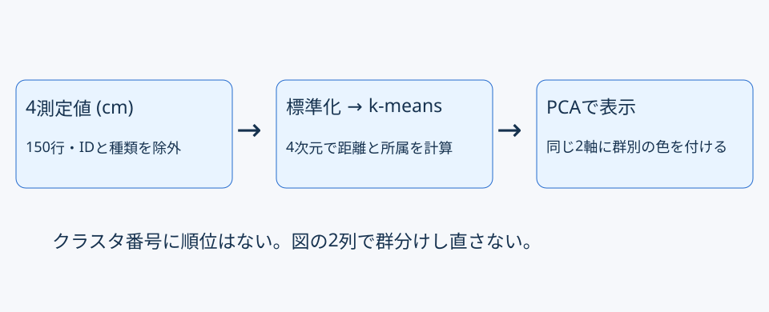
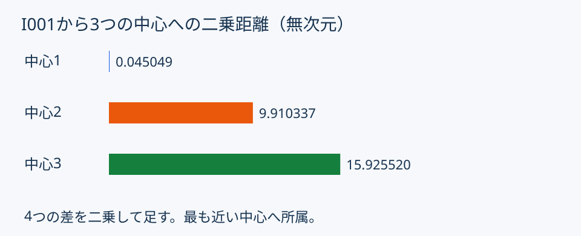
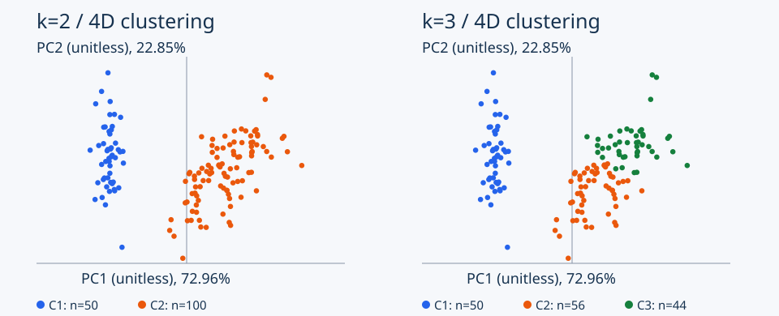
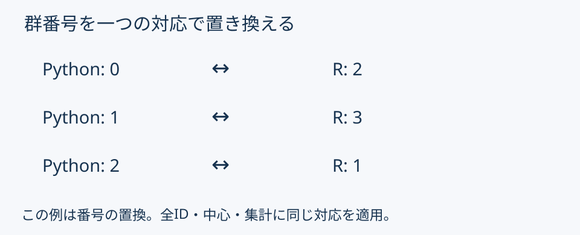
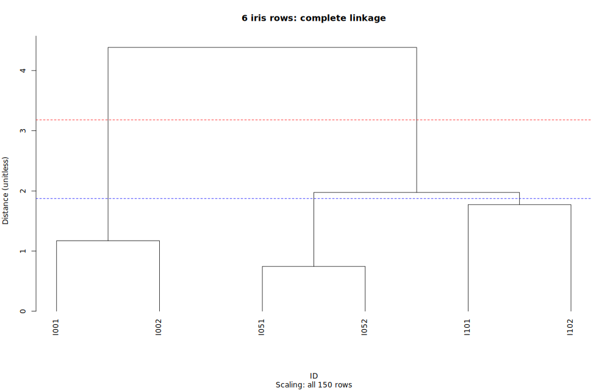

クラスタ分析
| 活動 | 分 |
|---|---|
| 復習・距離と中心 | 25 |
| 両言語の主例 | 25 |
| kの変更演習 | 20 |
| 独立照合・樹形図 | 10 |
| 提出・質問 | 10 |
z = (測定値 − 列平均) / 標本標準偏差
X.std(ddof=1)sapply(X, sd)

| k | 初期中心のID |
|---|---|
| 2 | I001・I101 |
| 3 | I001・I051・I101 |
| 属性 | 内容 |
|---|---|
labels_ |
150行の所属 |
cluster_centers_ |
k行×4列の中心 |
inertia_ |
群内平方和 |
中心の列順は入力のfeaturesと対応。
model$size: 各群の件数。model$tot.withinss: 二乗距離の合計。| k | 件数 | 群内平方和 |
|---|---|---|
| 2 | 50・100 | 約220.879294 |
| 3 | 50・56・44 | 約139.099201 |
指定初期条件での結果。番号順は変わり得る。
未変更でも実行できるが、課題完成とは区別する。

| ファイル | 内容 |
|---|---|
| assignments.csv | 150行のID・所属・二乗距離 |
| cluster_summary.csv | 比較用2群＋変更対象3群 |
| clusters.png | 同じ座標の2パネル |
保存先：work/exercises/lesson14/output/
途中では丸めず、最後の表示だけ丸める。


赤線：2群 ／ 青線：3群。尺度は全150行から求める。
Formsの5設問：主言語・Python全文・R全文・実行状況・振り返り。
添付提出は不要。締切・URLは教員の案内を確認。